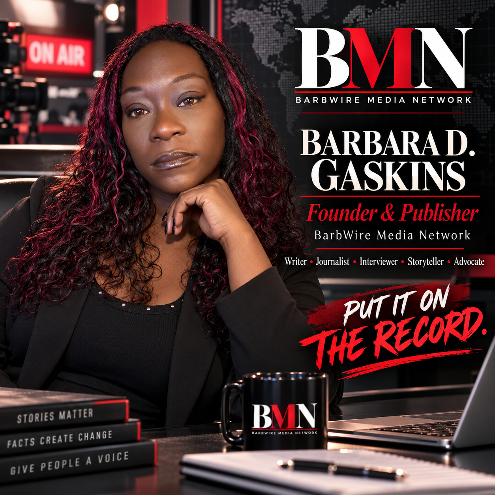

BarbWire Media Network is building an independent North Carolina newsroom centered on original reporting, public records, interviews, community accountability, culture and the stories behind the headlines.
BarbWire Media Network produces original reporting, interviews, public-affairs coverage, multimedia journalism, commentary and community-centered storytelling. BMN distinguishes reported journalism from opinion, commentary, satire, entertainment and sponsored material through clear labeling.
Local and state government, public institutions, policy implementation, elections and civic information.
Courts, criminal justice, reentry, public records, institutional accountability and community impact.
Interviews, Eastern North Carolina stories, community voices, culture, technology and emerging issues.
BMN is committed to accuracy, transparency, attribution and responsible newsgathering.

Barbara D. Gaskins is the Founder and Publisher of BarbWire Media Network. Her published commentary has appeared in The Washington Post, The News & Observer, The Charlotte Observer, The Durham Herald-Sun and The Daily Reflector.
Her coverage interests include public affairs, criminal justice, reentry, community violence intervention, government accountability, technology, artificial intelligence and community affairs.
BMN distinguishes original works from syndicated placements and from independent profiles or interviews.
This newsroom-issued credential verifies affiliation with BarbWire Media Network for legitimate newsgathering activities. It is not a government credential and does not independently grant access to restricted areas or events.
The complete BMN site will later add story pages, reporter profiles, a corrections archive, news-tip intake, publication archives, newsletters and additional credential verification. Until then, BMN's Facebook Page can serve as the primary publishing and messaging channel.